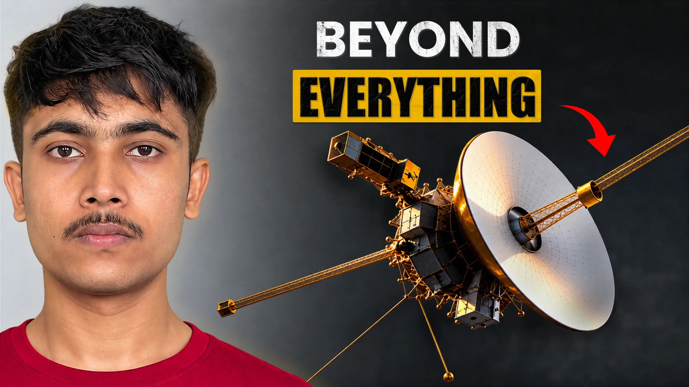
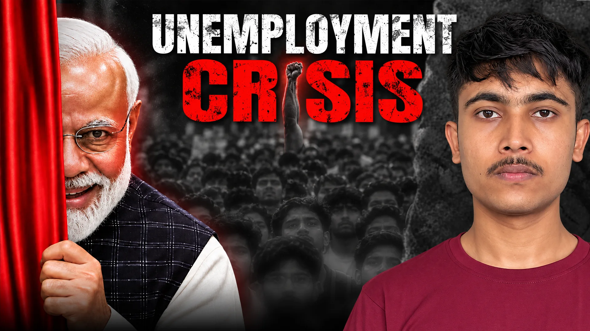
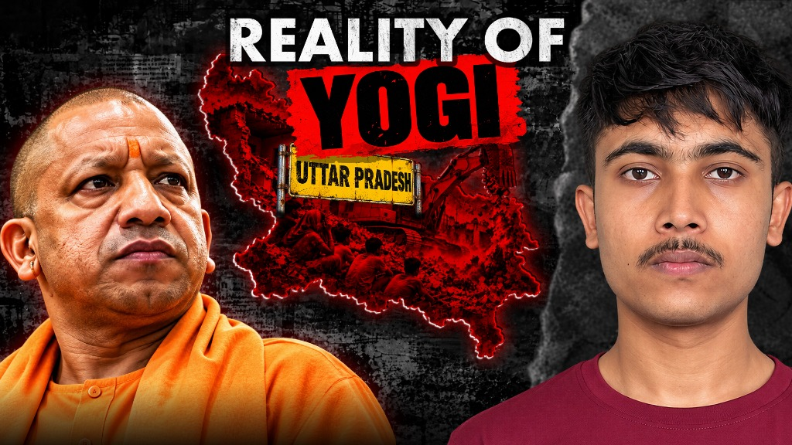
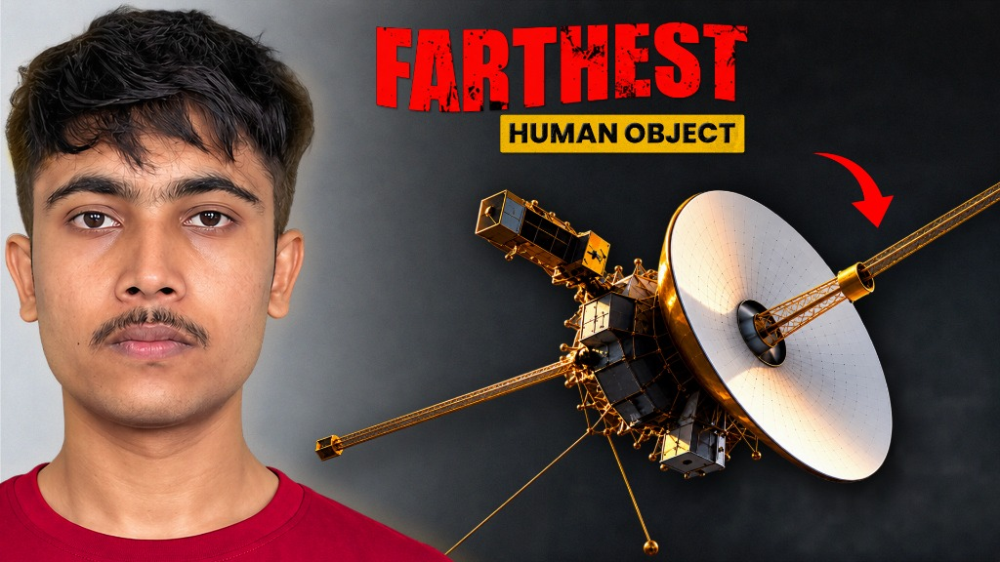
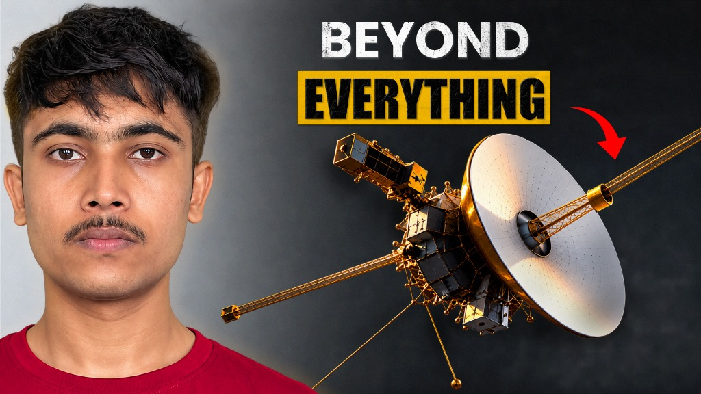

DOCUMENTARY · SPACE SCIENCE
Watch Video
I turn raw footage into videos people finish, and design the frame that makes them press play.





Video Editor & Visual Storyteller
YouTube & Post-Production
Available Worldwide (Remote)
I enjoy transforming raw ideas into high-retention stories and designing click-worthy thumbnails that genuinely connect with audiences and keep viewers hooked from the first second.
Bharathiar University (2024 – 2027)
Currently pursuing (5th Semester Undergraduate) · Focusing on post-production workflows, high-retention video storytelling, and motion design.
Short-form Reels, Shorts & long-form YouTube cuts
High-CTR clickable cover art & titles